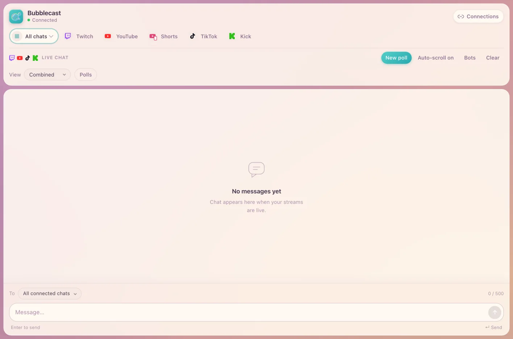
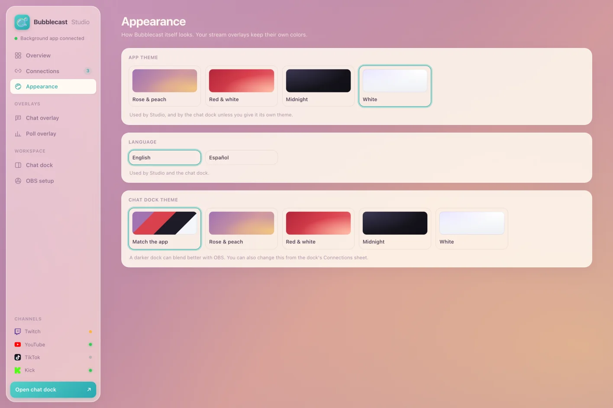

Made for multistreamers
One place to read, answer and poll every audience, without browser tabs or paid relay services.
One chat dock in OBS
Every platform's messages, emotes and badges in one feed. Filter by platform or split into columns.
Polls everywhere at once
Start a native poll on Twitch, YouTube and Kick from one form, and show the combined result on stream.
Reply to everyone
Send one message to every connected chat, or pick a single platform.
Overlays that pop
Transparent comic-bubble chat and poll overlays, sized for 1080p, 1440p, 4K or vertical streams.
Yours, on your PC
No Bubblecast account and no cloud. Sign-ins use each platform's official login and stay on your computer.
English and Spanish
Studio and the dock follow your language, with themes from soft rose to midnight.


Live in four steps
The installer sets up everything OBS needs. No Node.js, no command line.
Close OBS and run the installer
Windows may warn that the app is unrecognized. Choose More info, then Run anyway.
It sets itself up
Bubblecast adds shortcuts, starts with Windows, adds the chat dock to OBS and opens Studio.
Connect your channels
Bubblecast's setup guide walks you through each platform, with a picture of every screen.
Add the overlays
In Studio → OBS setup, add the chat and poll overlays to your scene with one click.
YouTube and Kick sign-in use your own free developer app, so your limits are yours alone. The setup guide in Bubblecast shows every step with pictures. It takes about ten minutes, once.
Questions
Is it really free?
Yes. Bubblecast is open source and has no servers to pay for: everything runs on your computer.
Does it work on Mac?
The installer is for Windows, where most streamers run OBS. Developers can run it from source on macOS.
Is my account safe?
Bubblecast never sees your passwords. Twitch, YouTube and Kick sign-ins go through each platform's official login, and the access stays in your own Windows user folder.
How do I update?
Download the latest installer and run it. Your channels, settings and sign-ins are kept.
The dock isn't in OBS.
OBS was probably open during the install. Close OBS, then press Add dock in Studio → OBS setup, or use Add dock to OBS from the Bubblecast tray icon.
Made by TrueAlex
I’m a Spanish-speaking Nintendo content creator, and I built Bubblecast for my own streams. I stream the latest Nintendo games, like the Ocarina of Time remake. Feel free to join!
I stream in Spanish on Twitch, YouTube and TikTok, and everyone’s welcome. Say hi in chat: it might show up in a bubble.
- The Legend of Zelda
- Super Mario
- Final Fantasy
- Kingdom Hearts
- Smash Bros.
- Mario Kart
- Sonic the Hedgehog